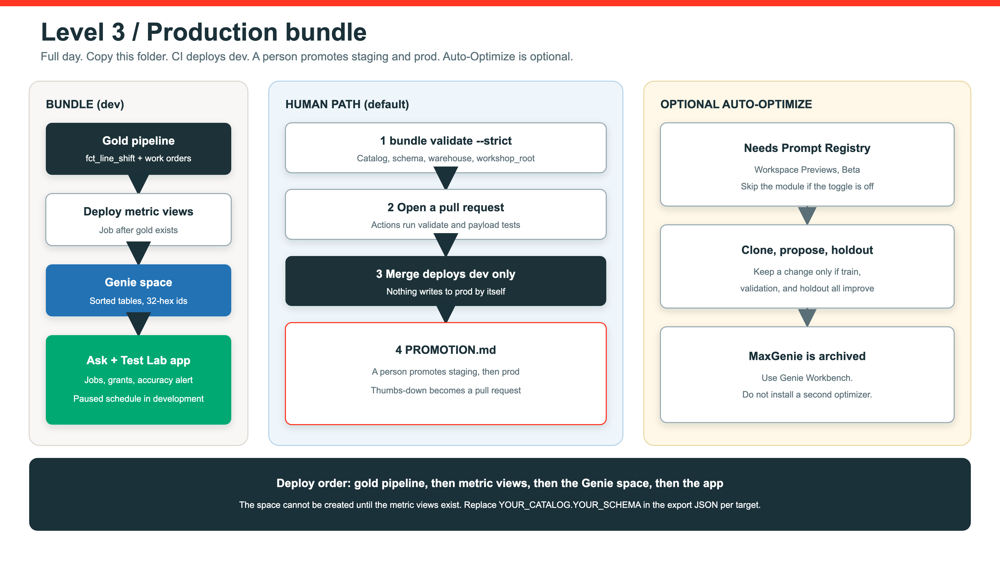

Level 3 · Full day · Apex Precision Manufacturing
A standalone lab for platform engineers and CoE teams. Copy level-3-production/, configure targets, and practice promotion.
What the bundle owns
Declarative gold tables the agent is allowed to see.
OEE, FPY, maintenance measures the Genie space depends on.
Serialized agent, instructions, and table list.
Post-deploy tests and optional Workbench paths.
Ask + Test Lab with source_code_path under the bundle files root.
Grants as code. Do not click them in by hand for the class path.
Deploy order

Validate first
YAML paths resolve relative to resources/.
Libraries must match the actual source type.
Genie table lists must be stable and complete.
Genie identifiers must be UUIDs, not display names.
databricks bundle validate --strict --target dev before any deploy.CI vs promotion
Pull request
Validate + payload tests
Merge deploys dev
Human review
Staging then prod
PROMOTION.md.Production gates
Broken DAB nodes fail in CI, not in the plant standup.
Run the 12-check scan in Workbench before promote.
Benchmark threshold. Below that, do not promote.
App must answer before you call the deploy done.
Operate
Previous bundle revision plus the serialized Genie file.
Staging and prod as a service principal, not a personal user.
Onboard through the model and grants, not a one-off space.
Triage with the scorecard and RUNBOOK.md.
Optional optimizer
A thumbs-down or a failed benchmark becomes a pull request. CI validates. A person promotes.
Clone, train / validation / holdout. Keep a change only if the score improves. Roll back if it drops. Needs Prompt Registry (workspace Preview, Beta).
Close the lab
level-3-production/ as the project root.bundle validate --strict.